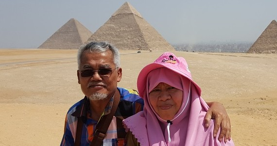
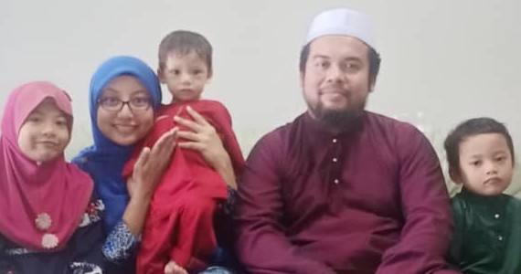
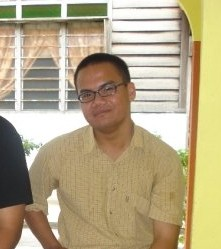
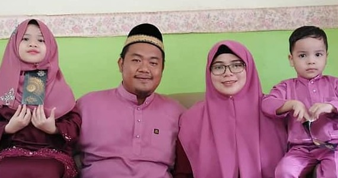
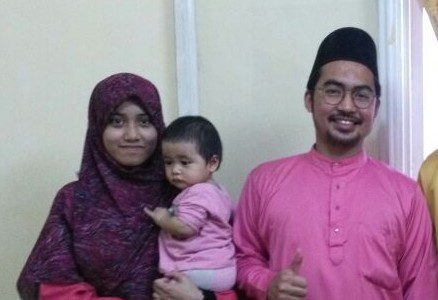
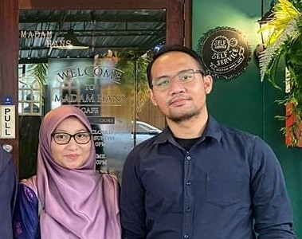
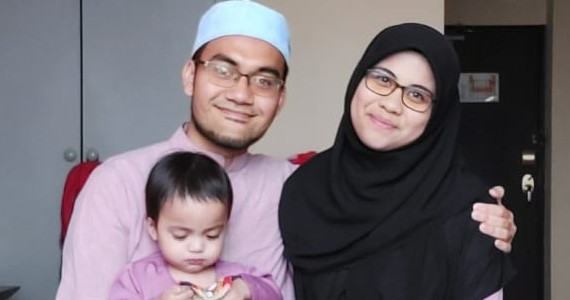

Alhamdulillah, I am very blessed to be born in this lovely family,
thanks to Allah for giving me kind and supportive parents, cute and good brother,
understanding and lovely sisters-in-law. Many people have been asking me
how do I live normally with 6 brothers. I don't know, I got used to it since
I was born so I didn't seems to see that issue HAHAHAHA. Sorry for those who
asked me that those who doesn't have brothers and wanna take mine, but what's mine is mine
okay, they are my brothers so no sharing2! 😜
| Pictures |
Name |
Age |
Relationship |
|  |
Azero bin Mohammed Anuar |
64 |
Father |
| Jamaliah binti Ahmad |
63 |
Mother |
|  |
Mohd Afiq bin Azero |
35 |
Eldest Brother |
| Nur Arina binti Rai |
35 |
Sister-in-law |
| Auni Sofiyyah binti Mohd Afiq |
7 |
Niece |
| Muhammad Hamzah bin Mohd Afiq |
4 |
Nephew |
| Muhammad Yusuf bin Mohd Afiq |
2 |
Nephew |
|  |
Mohammad Luqman Haqim bin Azero |
33 |
2nd Brother |
|  |
Muhamad Shauqi Amar bin Azero |
31 |
3rd Brother |
| Ainul Nadia binti Suhaimee |
29 |
Sister-in-law |
| Aisyah Humaira binti Muhamad Shauqi Amar |
5 |
Niece |
| Uwais Umar bin Muhamad Shauqi Amar |
3 |
Nephew |
|  |
Muhammad Siddiq bin Azero |
28 |
4th Brother |
| Norliyana Azizah binti Junaidi |
25 |
Sister-in-law |
| Sayyidah Nur Nafisah binti Muhammad Siddiq |
3 |
Niece |
|  |
Muhammad Rofiq Khayr bin Azero |
26 |
5th Brother |
| Nurul Aishah binti Ramli |
26 |
Sister-in-law |
|  |
Muhammad Haziq Iqbal bin Azero |
24 |
6th Brother |
| Wan Nur Hanis binti Wan Ahmad Dasuki |
26 |
Sister-in-law |
| Muhammad Tolhah Ubaidillah bin Muhammad Haziq Iqbal |
2 |
Nephew |